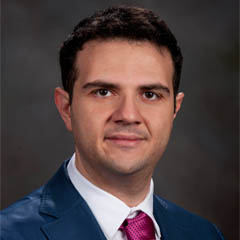
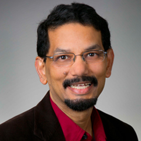

To access the recorded session of this webinar, please click here
Towards Connecting the Remaining 3+ Billion
|
Abstract: It goes without saying that we suffer from severe gaps in global internet connectivity. We tend indeed to forget that we still have about half of the world population (or about 4 billion people) without boroadband connectivity. And it is expected that 5G (in it current initial deployment stages) will further accentuate this connectivity divide. Actually, the Covid 19 pandemic also showed that the connectivity divide is in a way becoming one of the modern faces of inequality, deepening the economic and social unbalances between the 'Haves' and 'Have Nots' in a digital context. To achieve digital inclusiveness, we need to develop and deploy new technological solutions that help connecting the unconnected/under-connected in an affordable fashion. In this context, this talk aims to (i) provide an envisioned picture of 6G, (ii) serve as a research guideline in the beyond 5G era, and (iii) go over the recently proposed solutions to provide high-speed connectivity in under-covered areas in order to serve and contribute to the development of far-flungregions.
|

Professor Mohamed-Slim Alouini, IEEE Fellow
Distinguished Professor,
Electrical and Computer Engineering
King Abdullah University of Science and Technology (KAUST)
Saudi Arabia
|
Brief Bio: Mohamed-Slim Alouini was born in Tunis, Tunisia. He received the Ph.D. degree in Electrical Engineering from the California Institute of Technology (Caltech) in 1998. He served as a faculty member at the University of Minnesota then in the Texas A&M University at Qatar before joining in 2009 the King Abdullah University of Science and Technology (KAUST) where he is now a Distinguished Professor of Electrical and Computer Engineering. Prof. Alouini is a Fellow of the IEEE and of the OSA. He is currently particularly interested in addressing the technical challenges associated with the uneven distribution, access to, and use of information and communication technologies in far-flung, rural, low-density populations, low-income, and/or hard-to-reach areas.
|
Extended Reality over 6G Networks: A Tale of Two Rs
|
Abstract: Unleashing the true potential of extended reality (XR) applications, encompassing virtual reality (VR), augmented reality (AR), and mixed reality, requires providing them with seamless and pervasive connectivity over wireless cellular networks such as 5G and 6G. However, deploying wireless XR applications will impose new visual and haptic requirements that are directly linked to the quality-of-experience of XR users. These requirements can only be met by wireless 6G connectivity that offers high-rate and high-reliability low latency communications (HRLLC), unlike the low rates usually considered in vanilla 5G ultra-reliable low latency communication scenarios. Therefore, in this talk, after a brief overview on our vision on the role of XR in 6G systems, we will explore the potential of using wireless 6G networks operating at the terahertz (THz) frequency bands for meeting HRLLC requirements of VR applications. We first quantify the risk for an unreliable VR performance through a novel and rigorous characterization of the tail of the end-to-end (E2E) delay. Then, we perform a thorough analysis of the tail-value-at-risk to concretely characterize the behavior of extreme wireless events crucial to the real-time VR experience. We use this analysis to derive system reliability for scenarios with guaranteed line-of-sight (LoS) as a function of THz network parameters. We then present simulation results that show how abundant bandwidth and low molecular absorption are necessary to improve the VR application reliability, although their effect remains secondary compared to the availability of LoS. Subsequently, we summarize some of our key results in two related areas: a) the reliability of AR over THz systems and b) the role of machine learning can play in enabling wireless VR applications. We conclude our talk with an overview on other key open problems in the areas of THz and cellular-connected XR.
|

Professor Walid Saad, IEEE Fellow
Network sciEnce, Wireless, and Security (NEWS@VT) Laboratory,
Wireless@VT, Bradley Department of Electrical and Computer Engineering,
Virginia Tech, USA
|
Brief Bio: Walid Saad (S’07, M’10, SM’15, F’19) received his Ph.D degree from the University of Oslo in 2010. He is currently a Professor at the Department of Electrical and Computer Engineering at Virginia Tech, where he leads the Network sciEnce, Wireless, and Security (NEWS) laboratory. His research interests include wireless networks, machine learning, game theory, security, unmanned aerial vehicles, cyber-physical systems, and network science. Dr. Saad is a Fellow of the IEEE. He is also the recipient of the NSF CAREER award in 2013, the AFOSR summer faculty fellowship in 2014, and the Young Investigator Award from the Office of Naval Research (ONR) in 2015. He was the author/co-author of ten conference best paper awards at WiOpt in 2009, ICIMP in 2010, IEEE WCNC in 2012, IEEE PIMRC in 2015, IEEE SmartGridComm in 2015, EuCNC in 2017, IEEE GLOBECOM in 2018, IFIP NTMS in 2019, IEEE ICC in 2020, and IEEE GLOBECOM in 2020. He is the recipient of the 2015 Fred W. Ellersick Prize from the IEEE Communications Society, of the 2017 IEEE ComSoc Best Young Professional in Academia award, of the 2018 IEEE ComSoc Radio Communications Committee Early Achievement Award, and of the 2019 IEEE ComSoc Communication Theory Technical Committee. He was also a co-author of the 2019 IEEE Communications Society Young Author Best Paper and of the 2021 IEEE Communications Society Young Author Best Paper. He is an Editor for several major IEEE Transactions.
|
Software Defined Networking for Data-Intensive Science
|
Abstract: Many scientific works (such as Large Hadron Collider) generate huge amount of data that the computational approach to process and distribute such data to garner new knowledge is extremely important. Software defined networking (SDN) is of great value for such data-intensive science (DIS). In this talk, we’ll discuss different examples of DIS, in what ways SDN plays a role in DIS as well as new research opportunities.
|

Professor Deep Medhi, IEEE Fellow
Computer Science & Electrical Engineering (CSEE) Department
School of Computing and Engineering
University of Missouri - Kansas City
|
Brief Bio: Deep Medhi is currently serving as a Program Director in the Computer & Network Systems (CNS) Division at the National Science Foundation (NSF) under the IPA Program.
He is on leave as Curators' Distinguished Professor in the Department of Computer Science and Electrical Engineering at the University of Missouri-Kansas City, USA. He received B.Sc. in Mathematics from Cotton College, Gauhati University, India, M.Sc. in Mathematics from St. Stephen's College, University of Delhi, India, and his Ph.D. in Computer Sciences from the University of Wisconsin-Madison, USA. Prior to joining UMKC in 1989, he was a member of the technical staff at AT&T Bell Laboratories from 1987 to 1989. While at AT&T Bell Labs, he co-developed Facility Diverse Routing - a feature that was deployed in AT&T's nationwide dynamic routing network.
He was visiting professor at the Technical University of Denmark and Université Pierre et Marie Curie (UPMC, now renamed as Sorbonne Université), Paris, France. He was a visiting research fellow at Lund Institute of Technology, Sweden, a research visitor at University of Campinas, Brazil under the Brazilian Science Mobility Program and served as a Fulbright Senior Specialist. His short-term visits include Princeton University, MIT, KTH Royal Institute of Technology, Sweden, and Conservatoire National des Arts et Métiers (CNAM), Paris, France. He is an honorary professor in the Computer Science & Engineering Department at the Indian Institute of Technology-Guwahati, India.
He was the Editor-in-Chief of Springer's Journal of Network and Systems Management, and is (or served) on the editorial board of IEEE/ACM Transactions on Networking, IEEE Transaction on Parallel and Distributed Computing, IEEE Transactions on Network and Service Management, IEEE Communications Surveys & Tutorials, Computer Networks (Elsevier), Telecommunications Systems (Springer), and IEEE Communications Magazine. He has served on the program committees of many conferences such as IEEE ICNP, IEEE INFOCOM, IFIP Networking (including as TPC co-chair) and IEEE/IFIP NOMS (including as TPC co-chair).
His research has been funded by DARPA and NSF. He has published over 190 peer-reviewed papers, and is co-author of the books, Routing, Flow, and Capacity Design in Communication and Computer Networks (2004) and Network Routing: Algorithms, Protocols, and Architectures (1st edition,2007), both published by Morgan Kauffman/Elsevier. The 2nd edition of Network Routing was published in 2017.
He is a Fellow of the Institute of Electrical and Electronics Engineers (IEEE), recognized for his scientific contributions to optimization and the design of computer-communication networks.
|
Principal Host
 |
Sudip Misra, PhD (Carleton U, Canada), FNAE (India), FNASc (India), FIETE (India), FIET (UK), FRSPH (UK)
ACM Distinguished Scientist
Alexander von Humboldt Fellow (Germany)
IEEE Communications Society Distinguished Lecturer
Professor & INAE Abdul Kalam Technology Innovation National Fellow
Department of Computer Science & Engineering
Indian Institute of Technology
Kharagpur-721302
West Bengal, India
Official Website: https://cse.iitkgp.ac.in/~smisra/
SWAN Group: https://cse.iitkgp.ac.in/~smisra/swan/
|
Co-Hosts
 |
Dr. Arijit Roy
India-France Raman-Charpak Fellow,
Former Senior Research Fellow, Council of Scientific & Industrial Research
Post-Doctoral Research Fellow
Parallel Computing and Optimisation Group
University of Luxembourg, Luxembourg
Website: www.arijitroy.info
|
 |
Dr. Ayan Mondal
Assistant Professor
Department of Computer Science and Engineering
Indian Institute of Technology Indore
Khandwa Road, Simrol, Indore 453552, India
Website: https://ayanmondal.github.io/
|
Webinar Registration
All participants need to pre-register by 5 PM (IST), November 14, 2021 by filling-up the following form: Registration Link
WebEx sign-in details will be shared with the registered participants using the email address provided in the registration form.
The Webinar flyer is available here.